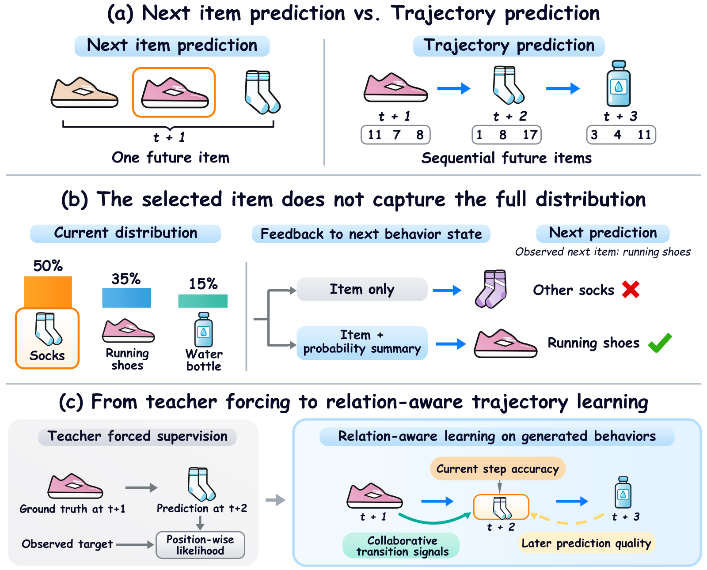
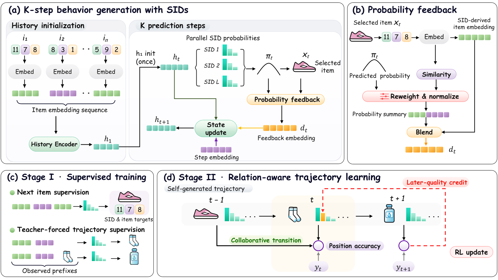
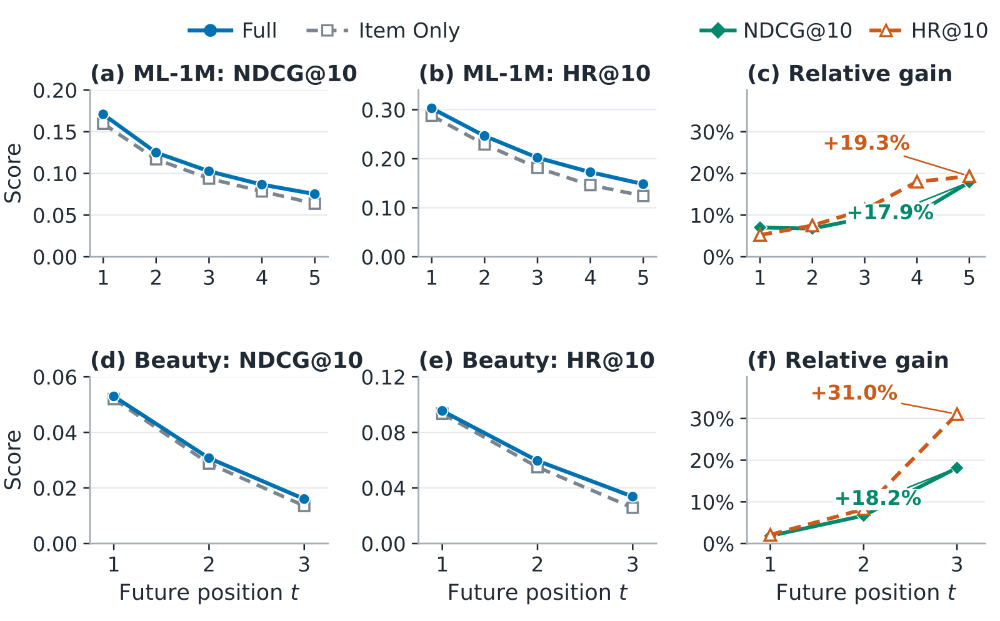
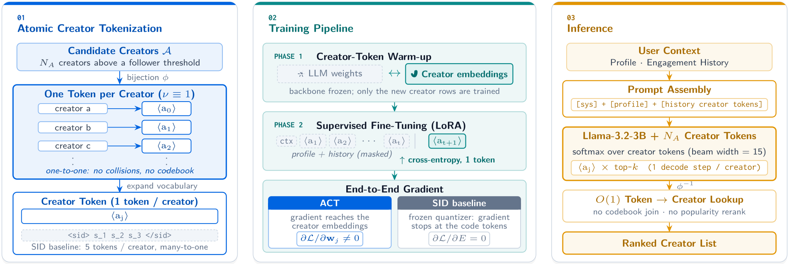
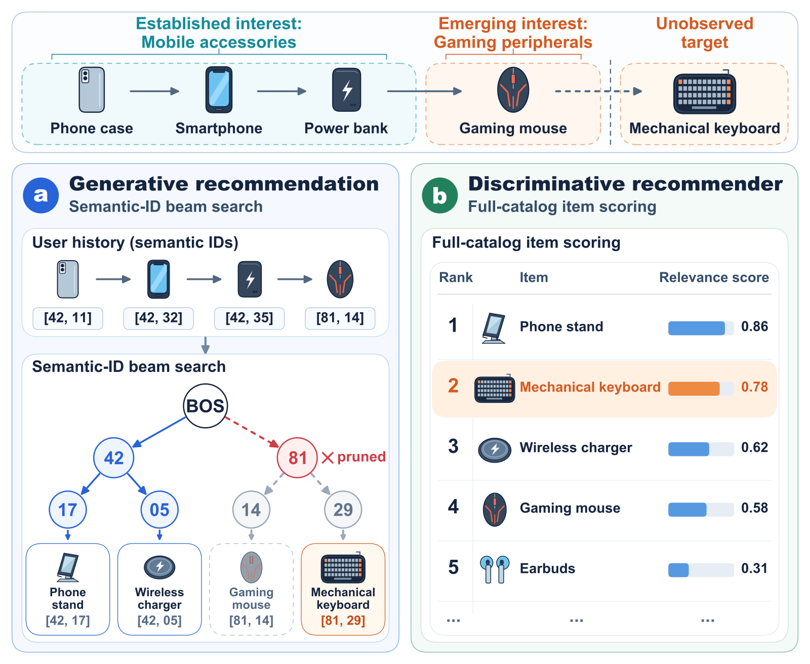
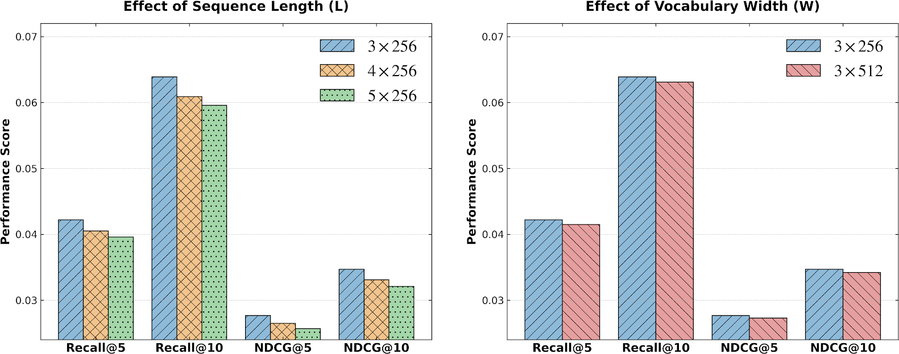
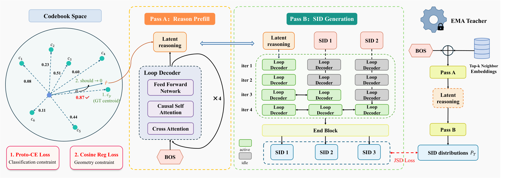
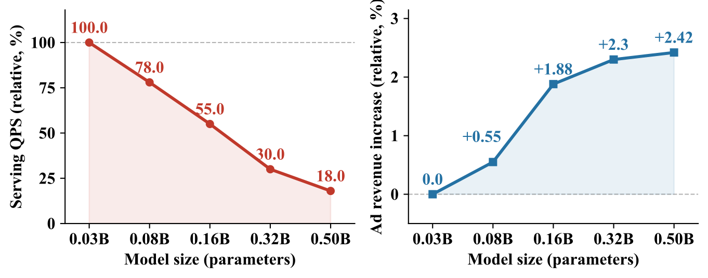
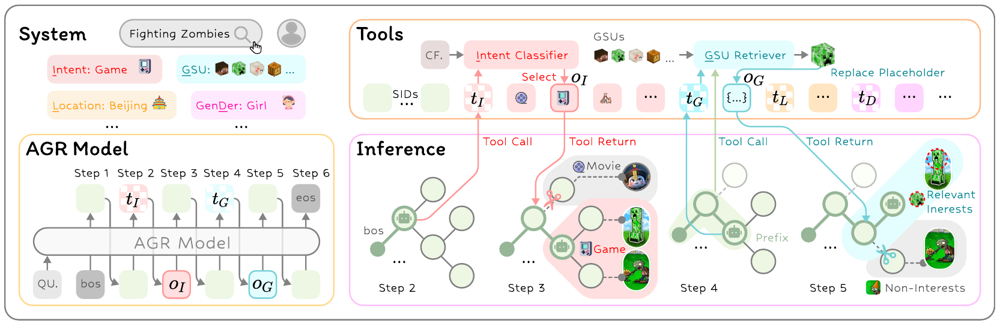

目录 · 8 节
1一串行为和一张候选列表不一样2逐个生成编号卡在哪3TraGR 怎么一次生成一件商品4走一遍：袜子 50%、跑鞋 35%5用自己生成的轨迹再练一遍6实验结果7这对做生成式推荐的人意味着什么8局限模型五成把握选了袜子，那三成五的跑鞋去哪了？TraGR 怎么预测用户接下来的一串行为一个用户刚买了一双跑鞋。接下来他大概会买运动袜，再买一个水壶。推荐系统如果只猜下一件，看到的只是这条路上的第一步；如果能把后面几步按顺序一起猜出来，就能提前准备相关的推荐。
假设模型正在猜第二步：袜子 50%，跑鞋 35%，水壶 15%。它选了袜子，然后接着猜第三步。问题是，往下传的只有「袜子」这一件商品。那 35% 的跑鞋去哪了？模型手里只剩袜子，第三步很可能又猜一双袜子。而这个用户实际的下一步，是跑鞋。
这篇论文来自同济大学、香港中文大学、快手和复旦大学，研究的是用户行为轨迹预测：给定一个用户的历史，按顺序预测他接下来的 K 次交互。现有的序列推荐大多只预测下一件。生成式推荐把每件商品写成一串离散编号，也就是 Semantic ID（SID），再逐个生成这些编号；GCB（一种基于 SID 的轨迹生成方法）把这种做法推广到一串商品，一件接一件地生成编号，但每件商品都要好几步串行解码，只把选中的商品往下传，训练时又总是喂真实的历史。TraGR 让每件商品的所有编号并行预测出来，用一个「行为状态」每件商品更新一次；更新时，除了选中的商品，还带上一份按概率和相似度加权的候选摘要；最后再用模型自己生成的轨迹训练一轮，让后面几步的好坏反过来影响前面的选择。在四个公开数据集上，它在全部 36 个数据集与指标的组合里都是最高分。
每一步把「选了谁」和「还差点选了谁」一起传下去，再让后面几步的结果来训练前面的选择，越靠后的位置提升越明显；但实验里最大的商品库只有一万两千件，每一步都要对整个商品库算一遍候选摘要。
一串行为和一张候选列表不一样
「下一件」推荐给出的列表，比如跑鞋、另一款跑鞋、袜子，是同一个时刻的几个备选，用户只会选其中一个。轨迹预测给出的是不同时刻的行为：第 1 步跑鞋，第 2 步袜子，第 3 步水壶。前一步猜错，后一步的条件就跟着错。
所以评测也按位置算。论文在每个未来位置上算 HR@10（真实商品是否在前 10 名）和 NDCG@10（排得越靠前分越高），再把各位置的分数合起来：M 开头的指标取算术平均，如 MNDCG（各位置 NDCG 的算术平均）；S 开头的取几何平均，如 SNDCG（各位置 NDCG 的几何平均）和 SHR（各位置 HR 的几何平均）。几何平均对某一步特别差更敏感。SeqMatch@50 更严：一条轨迹里每个位置的真实商品都进了那个位置的前 50，才算命中。

逐个生成编号卡在哪
生成式推荐里，每件商品对应一串编号，比如图里跑鞋是「11 7 8」。模型像写句子一样一个编号一个编号地生成，凑齐一件商品，再接着写下一件。
论文指出这种做法放到轨迹上有三个问题。第一，同一个逐字生成的过程既负责「拼出这件商品的编号」，又负责「从这件商品走到下一件」，每件商品要好几步互相依赖的解码，商品之间的转移藏在一长串编号里。第二，前一步选中的商品还没有被真正观察到，模型只把这一件往下传，它对其他候选的判断就丢了。第三，训练时下一步的条件总是真实历史，推理时却是模型自己猜的结果，两边不一致。
TraGR 怎么一次生成一件商品
TraGR 沿用 RPG（一种并行预测编号的生成式推荐）的编号方式：用 OPQ 把每件商品的文本特征压成 16 个编号，每个位置有 256 种取值。商品向量就是这 16 个编号向量的平均。
预测时，模型维护一个行为状态，可以理解为「用户此刻走到了哪一步」的一个向量。一开始，它由历史序列经过一个 Transformer 编码得到。每一步发生这几件事：
| 步骤 | 输入 | 产出 |
|---|---|---|
| 并行预测编号 | 当前行为状态 | 16 个位置各自的编号概率 |
| 合成商品分布 | 16 组编号概率 | 整个商品库上每件商品的概率 |
| 选商品 | 商品分布 | 推理时选概率最大的一件 |
| 算反馈 | 选中的商品 + 整个分布 | 一个反馈向量 |
| 更新状态 | 旧状态 + 反馈向量 + 第几步的位置向量 | 下一步的行为状态 |
16 个编号由 16 个小网络同时算出来，不再一个接一个。一件商品的分数等于它的 16 个编号概率取对数后的平均，再在整个商品库上做一次 softmax。状态每件商品只更新一次，商品和商品之间的转移由这个状态更新负责。

走一遍：袜子 50%、跑鞋 35%
下面用论文 Fig. 1(b) 的三件候选走一遍反馈怎么算。概率 50%、35%、15% 来自论文的图；相似度系数是示意。混合系数 0.75 是论文第二阶段和评测时用的值。
第一步，选商品。第二步的分布是袜子 0.5、跑鞋 0.35、水壶 0.15。推理时选概率最大的，选中袜子。
第二步，给候选重新加权。每件候选的权重等于「它的概率 × 它和袜子的相似度系数」，再归一化。示意：相似度系数袜子 1.0、跑鞋 0.5、水壶 0.2。加权后是 0.5、0.175、0.03，合计 0.705，归一化得到袜子 0.71、跑鞋 0.25、水壶 0.04。和所选商品不相干、概率又低的水壶被压了下去。
第三步，混成反馈向量。反馈向量 = 0.25 × 袜子向量 + 0.75 × 候选摘要。代进去，反馈里袜子占 0.25 + 0.75 × 0.71 ≈ 0.78，跑鞋占 0.75 × 0.25 ≈ 0.19，剩下约 0.03 是水壶。这意味着跑鞋在反馈里还留着近两成；只传选中商品的做法里，袜子占满，跑鞋一点不剩。
第四步，反馈更新状态。下一步的行为状态 = 当前状态 + 一个小网络对「当前状态、反馈向量、第几步」的输出。反馈里那 0.19 的跑鞋成分进了状态，第三步预测时，模型还记得「刚才跑鞋也很有可能」。
第五步，梯度也沿这条路往回走。候选摘要的权重里含有第二步的概率，所以第三步的损失可以顺着反馈向量，回头去调第二步给跑鞋和袜子的概率。论文把这条路径断掉做过对照：Beauty 上 SNDCG@10 从 0.0296 降到 0.0281。
这个例子说明，反馈向量是选中商品和它的「备选」的混合，相似度决定备选里留谁，概率决定留多少。论文的消融正好拆开了这几块。在 Beauty 上，只传选中商品的 SNDCG@10 是 0.0273；加上只按概率加权的摘要，升到 0.0281；只按相似度加权反而降到 0.0262；概率和相似度一起用，升到 0.0296。去掉反馈里那 0.25 的选中商品本身，降到 0.0292。

这种好处主要出现在后面几步。在 ML-1M 上，HR@10 的相对提升从第 1 步的约 5% 涨到第 5 步的 19.3%；在 Beauty 上，第 3 步的 HR@10 相对提升是 31.0%。这说明概率反馈主要帮的是轨迹后面几步的预测，论文也是这样解读的。
用自己生成的轨迹再练一遍
第一阶段是普通的监督训练：一边预测下一件商品，一边按真实的后续几件做「喂真实历史」的轨迹训练。这时反馈只用选中的商品，混合系数为 0。
第二阶段打开概率反馈，并且换成模型自己生成的轨迹。对每段历史，模型按自己的分布采样 8 条轨迹，真实的后续行为只用来打分。每一步给每件候选的奖励有两部分：猜中这个位置的真实商品得 1；再加 0.25 倍的「协同转移分」，也就是在训练数据里，所有用户从上一件商品出发、下一件正好是这件的比例。两部分合起来再除以 K。
这个奖励对整个商品库都算得出来，所以模型直接优化每一步的期望奖励，没被采样到的商品也拿得到梯度。此外，某一步选了哪件商品，会改变后面几步的条件。论文把后面各步的期望奖励加起来，减去同一段历史下其他几条轨迹的平均总奖励，作为这一步选择的额外信用：后面走得比别人好，这一步的选择就被加强。训练还用一个 KL 项把模型拉住，不让它离第一阶段的模型太远。 Hoot 说
示意：K = 3，真实的后续三件依次是袜子、跑鞋、水壶。论文每段历史采样 8 条轨迹，这里只取甲、乙两条，协同转移分的系数取论文的 0.25。为了算得简单，第一步的协同转移分都记 0。
第一步的选择 → 第二、三步的条件 → 后两步的期望奖励 m → 减去另一条轨迹的总分 → 第一步那个选择被加强或削弱
- 当前奖励 → 第一步的整个分布第一步模型给袜子、跑鞋、水壶的概率是 0.5、0.35、0.15，真实第一件是袜子，只有它拿到奖励 1 ÷ 3。期望奖励 m 按概率把每件候选的奖励加起来，它的梯度直接把袜子的概率往上推，不管这次采样抽没抽到袜子。第 1 步 m = 0.5 × (1 ÷ 3) ≈ 0.17，甲、乙两条一样
- 第一步的采样 → 第二步的条件轨迹甲抽到袜子，轨迹乙抽到跑鞋，选了哪件会改变第二步的状态和协同转移分。甲第二步给真实的跑鞋 0.6，训练数据里袜子之后接跑鞋的比例记 0.4；乙第二步只给跑鞋 0.2，跑鞋接跑鞋的比例是 0。甲：0.6 × (1 + 0.25 × 0.4) ÷ 3 = 0.22；乙：0.2 × 1 ÷ 3 ≈ 0.07
- 第三步 → 后两步的总分第三步照同样的办法算，示意记甲 0.3、乙 0.1。把第一步之后的 m 加起来，就是这条轨迹「后面走得怎么样」。甲：0.22 + 0.3 = 0.52；乙：0.07 + 0.1 = 0.17
- 额外信用 → 第一步抽到的那一件额外信用 = 本条轨迹后面各步的 m 之和，减去其他轨迹三步 m 的总和。甲为正，抽到袜子这一下的概率被加强；乙为负，抽到跑鞋这一下被削弱。甲：0.52 − (0.17 + 0.07 + 0.1) = 0.18；乙：0.17 − (0.17 + 0.22 + 0.3) = −0.52
- 最后一步 → 只有当前奖励第二步抽到的那一件，拿第三步的 m 当额外信用；第三步后面没有了，只靠它自己的 m 训练。
两条路各管各的：m 的梯度落在整个商品库的概率上，包括没抽到的商品，还会沿概率反馈流回前面几步；额外信用只加在抽到的那一件上，信用的数值本身不回传梯度。

出处
论文 §III 第二阶段式 (15)–(18)，λ = 0.25 和每段历史采样多条轨迹来自论文；三件商品沿用正文第 4 节的袜子、跑鞋、水壶；各步概率、协同转移分和 m 的数值都是示意，并只采样两条轨迹拿掉这两部分各自的效果，论文在表 V 里比过：从完整版里去掉协同转移分或者去掉后续信用，所有指标都降。只是多做几轮监督训练，或者在采样出来的前缀上继续做监督，都比不上完整版。
实验结果
论文用了 Beauty、Cell Phones、ML-1M、Last-FM 四个公开数据集。前两个用户序列短，预测 3 步；后两个序列长，预测 5 步。对比方法有 13 个配置，包括传统序列推荐、扩散模型、生成式推荐和专门做轨迹预测的 LPDO（用扩散模型生成轨迹）和 GCB。GCB 没有公开代码，是作者按论文描述复现的。
| 数据集 | 商品数 | 最强基线（SNDCG@10） | TraGR | 相对提升 |
|---|---|---|---|---|
| Beauty | 12,101 | RPG-M 0.0251 | 0.0296 | 17.9% |
| Cell Phones | 10,429 | EchoRec 0.0193 | 0.0229 | 18.65% |
| ML-1M | 3,706 | LPDO 0.0936 | 0.1074 | 14.7% |
| Last-FM | 987 | TIGER 0.2019 | 0.2052 | 1.63% |
（数字来自论文表 I 和表 III；相对提升按表中数字计算。）
这说明 TraGR 在四个数据集上都超过了各自最强的对手，而且每个数据集的最强对手都不一样。SeqMatch@50 在四个数据集上也都提升了，分别约 29.46%、75.65%、6.63%、12.02%，其中三个数据集的相对提升高于 SNDCG@10，即整条轨迹每一步都猜进前 50 的用户更多了。绝对值仍然很低：Beauty 上 SNDCG@10 不到 0.03。
预测步数拉长到 7 步和 10 步，所有方法都在变差；和 LPDO、GCB 相比，TraGR 从 3 步到 10 步掉得最少。唯一的例外是 Last-FM 上预测 3 步时，LPDO 的 SNDCG@10 略高。推理时间上，TraGR 比 LPDO 和逐步解码的 GCB 都快，比 RPG 慢；显存比 GCB 少，比 LPDO 和 RPG 多。
这对做生成式推荐的人意味着什么
如果你的生成式模型要一步接一步地往下推，别只把 argmax 的那一件传下去。
一个可以借鉴的改法是论文的「概率摘要」：在传给下一步的向量里，按概率和相似度混进一部分备选商品。消融里，只加按概率加权的摘要，在 Beauty 和 ML-1M 的所有指标上都有提升；再加上相似度和选中商品本身，提升更多。
另一个可以借鉴的是训练方式。只用真实历史训练，模型从没见过自己猜错之后的情况；在自己采样的轨迹上训练，并把后面几步的结果算到前面的选择上，是论文给出的一条具体做法。
局限
实验里的商品库最大只有 12,101 件。候选摘要每一步都要对整个商品库加权求和，计算量和商品数成正比。论文自己也把「在更大商品库上降低这部分计算」列为后续工作。
所有结果都是离线指标，没有线上实验。最重要的轨迹基线 GCB 没有公开代码，是作者自己复现的。
混合系数并不是越大越好：在 ML-1M 上，把它从 0.75 调到 0.90，SNDCG@10 继续涨，SHR@10 却下降。单独加协同转移分或单独加后续信用，效果在不同数据集上也不一致，两者合起来用才稳定。
读完这篇，你觉得
夜读鸮记下了，谢谢你的反馈。
点一下即可，无需登录；再点一次撤回。只统计匿名次数，不记录你是谁。
相关论文RELATED

Generative · 2026-11-04Beyond Semantic IDs: Atomic Creator Tokens for Large-Scale Generative RecommendationMeta 这篇论文给每个创作者在语言模型的词表里单独加一个 token，用它取代 SID。原因很直接：SID 是多对一的编码，好几个创作者会共用同一串 SID，模型即使生成对了 SID，也还得猜用户要的是其中哪一个。在 Meta 的创作者推荐数据上只换掉 token 这一层，前 15 个推荐里命中用户下一个互动创作者的比例从 23.58% 提到 43.41%。SID 方案每个用户的推理耗时还约是新方法的 2.7 倍。瓶颈在 SID 这一层，而不在语言模型。代价是每个 token 都要有足够的训练样本，所以作者只把它用在头部创作者上。
Generative · 2026-10-26From Item Scores to Semantic Tokens: Test-Time Collaborative Adaptation for Generative Recommendation用 Semantic ID 做生成式推荐时，模型要逐个 token 生成商品编码，束搜索每一步只留下分数最高的几条前缀，一条前缀被剪掉，它下面的所有商品就再也生成不出来。用户刚冒出新兴趣时，这个问题最明显。这篇论文提出 TCBSA（测试时协同束搜索调整），在每次剪枝之前，把打分模型给出的商品分数折算成对编码前缀的加分：打分模型先给全库商品打分，取排名靠前的几百件，把每件商品高出入围线的分差摊到它编码经过的每一步上；束搜索每一步排序前，把这些加分加到路径的累计分数上。两个模型都不重新训练。在不同公开数据集上，给 TIGER 加上它之后，排序准确率 NDCG@10 相对提高 4.9% 到 30.4%；用更窄的束，它也比把 TIGER 的束开宽更准、更快。 Generative · 2026-11-16ReSID: Rethinking Long-Tail Retrieval in Generative Recommendation through Item Reachability生成式推荐把商品编成一串 Semantic ID，再用 Beam Search 逐位生成，冷门的长尾商品很难被召回。作者把从编码到解码再到匹配的整条链路拆开查，发现长尾商品多半在解码早期就丢了：在 Amazon Industrial 上，才生成两位 token，62.5% 的长尾目标就已经掉出 beam。他们还发现，把向量切成几段各自量化的并行 SID，比逐层量化残差的串行 SID 更照顾长尾，因为某一位出错不会连累后面几位，生成得不完全对的序列里仍留着有用的位。ReSID 据此在 Beam Search 里压低热门偏置、加入用户语义打分，让长尾前缀活下来，最后允许部分位对不上也能匹配到商品。它已在线上服务主流量，广告收入提高 1.3%，长尾曝光占比提高 4.0%。长尾召回的瓶颈常常在解码时被剪掉，事后放宽匹配补不回来。
Generative · 2026-11-16ReSID: Rethinking Long-Tail Retrieval in Generative Recommendation through Item Reachability生成式推荐把商品编成一串 Semantic ID，再用 Beam Search 逐位生成，冷门的长尾商品很难被召回。作者把从编码到解码再到匹配的整条链路拆开查，发现长尾商品多半在解码早期就丢了：在 Amazon Industrial 上，才生成两位 token，62.5% 的长尾目标就已经掉出 beam。他们还发现，把向量切成几段各自量化的并行 SID，比逐层量化残差的串行 SID 更照顾长尾，因为某一位出错不会连累后面几位，生成得不完全对的序列里仍留着有用的位。ReSID 据此在 Beam Search 里压低热门偏置、加入用户语义打分，让长尾前缀活下来，最后允许部分位对不上也能匹配到商品。它已在线上服务主流量，广告收入提高 1.3%，长尾曝光占比提高 4.0%。长尾召回的瓶颈常常在解码时被剪掉，事后放宽匹配补不回来。 Generative · 2026-11-10Rethinking Latent Reasoning for Generative Recommendation: Beyond Teacher-Generated CoT and Recurrent Hidden-State Feedback生成式推荐若要在中间做潜在推理，通常得先让老师模型写出思维链，成本高，也不容易稳定。这篇论文不再生成老师轨迹，而是先用固定的稀疏编码器把历史商品描述编成可缓存的词汇特征，再把同一用户见过的商品特征汇总成一个多热语义目标；训练时用浅层线性头，让插在历史和目标商品编码之间的推理 token 的隐状态去预测这个目标。这些目标只依赖历史上见过的商品，不会偷看下一个要预测的物品。只做监督微调时，方法在四个推荐基准上超过所比较的基线；在 Beauty 上，相对 MiniOneRec，NDCG@1 提高了 20.6%，NDCG@5 提高了 10.3%。对照实验表明，增益来自与输入对齐的历史语义监督，而不是多出来的 token 本身。
Generative · 2026-11-10Rethinking Latent Reasoning for Generative Recommendation: Beyond Teacher-Generated CoT and Recurrent Hidden-State Feedback生成式推荐若要在中间做潜在推理，通常得先让老师模型写出思维链，成本高，也不容易稳定。这篇论文不再生成老师轨迹，而是先用固定的稀疏编码器把历史商品描述编成可缓存的词汇特征，再把同一用户见过的商品特征汇总成一个多热语义目标；训练时用浅层线性头，让插在历史和目标商品编码之间的推理 token 的隐状态去预测这个目标。这些目标只依赖历史上见过的商品，不会偷看下一个要预测的物品。只做监督微调时，方法在四个推荐基准上超过所比较的基线；在 Beauty 上，相对 MiniOneRec，NDCG@1 提高了 20.6%，NDCG@5 提高了 10.3%。对照实验表明，增益来自与输入对齐的历史语义监督，而不是多出来的 token 本身。
Generative · 2026-04-20Semantic Trimming and Auxiliary Multi-step Prediction for Generative Recommendation生成式推荐把每件商品拆成几个 Semantic ID 码之后，用户历史一下子长了好几倍，训练又慢又占显存，而多出来的码里很多是重复的类目和品牌。STAMP 让模型先跑一两层，再按每个码自身的激活强度和被其他码关注的程度打分，只把高分的码交给后面的层；训练时再加一个多预测一个码的辅助目标，补回剪掉的信息。在 Amazon 三个数据集上，训练快了 1.36 倍以上，峰值显存省了一半多，效果和原模型持平。它省的是训练成本，不是提效果：在工业数据上，只加辅助预测反而最准，加上剪枝后这点提升就被抵消了。
Generative · 2026-11-06BRIDGE: Bridging the Semantic Quantization Gap for Generative Recommendation生成式召回根据用户历史逐位预测商品 SID，但普通下一码训练只检查正确编号的概率。正确码概率相同时，剩余概率分给哪些错误候选，并不会改变这项交叉熵。BRIDGE（生成式召回模型）想在猜对编号之外，也利用商品之间的相似关系来训练模型。在作者报告的 Beauty 消融中，两项附加损失合用的配置，比论文中不加这两项损失的对照配置，Recall@10 高 12.8%。
Generative · 2026-11-02Towards Reliable, Scalable, and Value-Aligned Generative Recommendation for Large-Scale Advertising快手在已上线的生成式广告召回系统 GR4AD 上改了三处，合成 GR4AD-X，线上累计让广告收入比 GR4AD 高 3.07%。三处改动针对同一个错位：模型按生成概率挑广告，平台要的却是收入。按生成概率排出的前十名和 eCPM 最高的前十名几乎不重合，命中率只有约 0.02。第一处让每条广告在第一层保留两个最近的聚类中心，一个前缀被剪掉也还能召回。第二处不放大主干，而是从排序系统多接二十几个用户画像和上下文特征，并加宽关键特征的 embedding。第三处给每个 SID 前缀估收入价值，即它下面广告的平均收入；剪枝时用 RRF 按每个前缀在概率排名和价值排名里的名次合成一个分数，据此截断。三处改动在线上逐个叠加验证。
Generative · 2026-10-21AGR: Agentic Generative Retrieval with Tool-Augmented Search生成式检索不必把全部特征一次塞进模型。AGR 在生成物品短编码时，按当前分支调用意图、位置或历史行为工具，把结果压成观察标记继续解码。快手线上实验中，强相关前四结果请求占比提升 0.205%。
讨论
欢迎补充实验细节、复现经验或不同看法。需 GitHub 登录。
正在加载讨论…